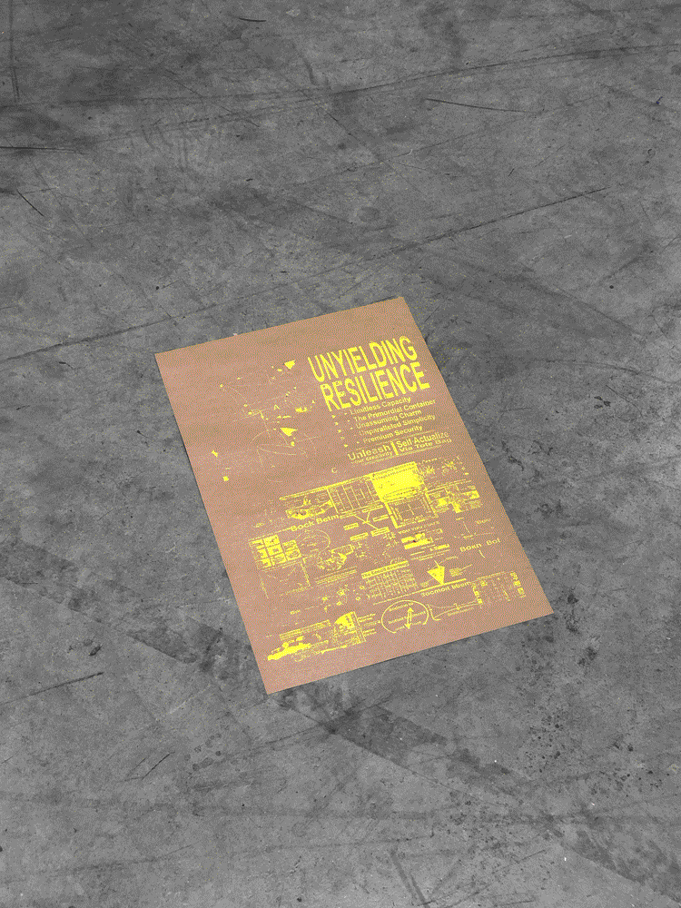
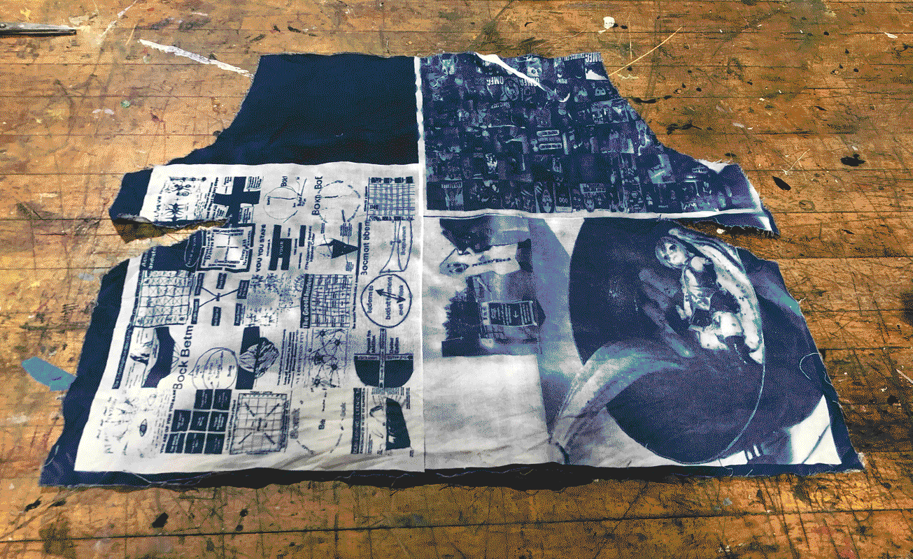

‽ Miscellaneous advertising
Enterprise is all bureaucracy. Understanding what the future might look like means understanding how bureaucracy is going to be either continually entwined in our lives as we push forward, or there will have to be some brakes put on it, and I just don’t think that’s escapable.
To do: misc TikTok analysis before the government shuts the app down

- 
- 
At the heart of all this motion is a lust for crawling through someone else’s ambiguity, in staring at a post or profile for longer than the machine’s trained you to, in the toothsome frustration of trying to figure out what’s a revelation, what’s a dark joke, and what’s just the result of a chemically imbalanced brain and an eternally available keyboard.
✸ A little about Leslie
Some person scampering around Turtle Island. I am dedicated to silly and serious tools and interactions for introspection, connection, and solidarity.
Consider this website a sandwichboard that advertises* my latest notes, happenings about town, and other such miscellany.
* Quick links: scattered navelgazing + what I'm up to now + a guestbook.
❦ What is Dandelion?
The dandelion section on my website comprises loosely remembered networks of people I am thankful for, inspired by, and want to acknowledge, among others not listed.
Trust, Kim, Daniela, Charlotte, Omar, Rebecca, R, M, Jina, Nico, J, Katherine, Daniel